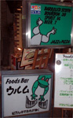
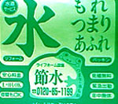
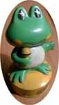
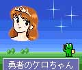
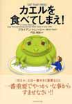
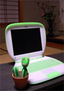

ピアノの中でおれが弾くカエル発見！！ 【帝都発=神田ぱんさま】ちーっす！こないだ看板特集をしまして、そのとき見つけた中野のかえる看板です。２段抜きの看板で、キャッチコピーは『ピアノの中でおれが弾く』っていうの、かっこいいでしょ！！【全国かえる奉賛会】やはりそうだったのかー。昔からピアノの中にはカエルがいて、人間が座ると、内部の弦の上を懸命に跳び回って音を出していると思っていたら、やっぱりそうだったのである。この看板で事実が証明されたようなものだあ。俺がひいていたんだあああ。 みんなも、ピアノバーをかにいっったら、どんどんカエルに演奏してもらおう。ピアノひいているふりをしているピアニストたちは、カエルと友達なので、ひいてもらえるのであった。
 水まわりのトラブルはかえる様にお任せ！【千葉県船橋発ケロリカ同志記者】数年前のお話になりますが、朝刊の間から小さなチラシがポトリと落ちました。拾い上げると、そこには惧れ多くもかえる様のお姿が！水道工事請負会社の広告のようですけれど、なによりも、布袋様のような福々しいかえる様のお腹に書かれた「節水」の２文字。これはもう、かえる様のお告げとしか言いようがありません。突然下されたかえる様からの啓示に、私は驚き恐れ、このチラシを大切にしまったのでございます。ところがあまりに丁寧にしまい込んでしまったため、以来このかえる様のお姿を目にすることはありませんでした。それがどうしたことか今日、本棚の奥から突然のお出まし―――。 私は再び恐れ驚き、もしやこれは、かえる様が今夏の水不足を教えて下さっているのでは・・・と思い至り、大王様にご報告申し上げる次第にございます。
【全国かえる奉賛会】カエルの啓示に違い無い。この会社に連絡して、今年の渇水に備えて、チラシを増刷するように連絡してあげよう。
 歌うカエル君はいったいどこのカエルーっ！【日本発けろむら同志記者】わたくしｋｅｒｏｍｕｒａ＠ともうします。私の悩みを聞いてください。先日、彼（写真１）を入手いたしました。歌い続けるかわいい奴です。左手には、のぼりを持っていた形跡とステージにはメーカー名が入っていた形跡があります。しかし、彼の名前がわかりません。 彼は、どこかのカラオケ機器メーカーのキャラクターのようなのです。以前、大型のものを電気店の店頭で見かけました。そのときは「どうせ非売品だから、手に入らないし」と不覚にもメーカー名等確認しませんでした。いざ入手してからHPで探し回りましたが、まったく手がかりがつかめません。 【全国かえる奉賛会】カエルをキャラにしたカラオケハウスは福岡では『ビッグエコー』が知られているが、彼のような店頭人形があったとは聞いたことが無い。いったい彼は、どんなカエルなんだー。素性を知っているカエラーがいたら、教えてクレー。大王も知りたいぞ。
カラオケにいったら、全員でカエルの歌をリフレインで歌いまくる大王なのである。あれってドイツ民謡って知ってた？このカエル君の持ち歌はなんだろう。
勇者のケロちゃん！携帯カエルゲーム！ 【福岡発げこげこ大王直筆】勇者のケロちゃん。大王の携帯に常駐するゲームなのであるーっ。主人公を戦うカエルに設定しただけで、すんばらしいゲームということだ。『王国暦１００５年。魔王の手下によってミニマル王国のお姫様がさらわれてしまった』 姫を救出するのが、主人公のケロちゃんなのである。 『カエルの男の子で、小さいときからお城の池に住んでおり、 お姫様とは仲良しでした。そんなケロちゃんは決心しました。「ボクがお姫様を助けなくては！」ケロちゃんは一人で魔王の封印された遺跡へと旅立ちました』 大の大人でも尻込みする魔物を相手に戦いの旅に出るとは、なんちゅー勇敢な。 『物語はケロちゃんが遺跡の入り口にたどり着いた所から始まります。はたしてお姫様を無事に助け出すことができるのでしょうか？』 さー。全国のカエラー諸君。携帯を持っていたらイマスグこのゲームをゲットして、会社でも通勤の途中でも、魔物と戦い続けようではないかあああ。ラストシーンは、きっとカエルのケロちゃんが姫と結婚するという結末だと思うなー。人間の姿ではなんなので、姫様は、かならず、メスのガマガエルとかに変身してくれるに違いないーっ！！ カエルを食べてしまえ本！ 【江戸発ケグリけろいむ同志記者】『カエルを食べてしまえ！』を入手しました。この本にはカエルという語がいっぱい出てきますが，それはカエルそのものではなく，隠喩ないし象徴でしかありません。では，この本でカエルと呼ばれているのは何なのかというと，本の帯に「カエル」とは一番大きく重要なこと一番重要でやっかいな事からすみませなさい!!とありまして，これだけ読むと，カエル＝重要なこと，というよい意味で使われているようにも思えますが，英文の副題に 21 Great Ways to Stop Procrastinating and Get More Done in Less Time (仕事を先延ばしにせず，より少ない時間でより多くの仕事をするための，21個のよい方法)とか，またこの本の中に もし二匹のカエルを食べなければならないなら，醜いほうから食べよ．ともある通りでして，つまりはこの本ではカエルはイヤな仕事の象徴なんですね．人間はとかく，イヤな仕事は先延ばしにしたく思うものですが，まずはそういうイヤな仕事から先に片付けろっていうわけです． そんなわけでこの本は，とんだ反カエラー文書でありました．大王様におかれては，発禁，焚書などの措置をとられますことを． 【全国かえる奉賛会】大王の生き方とは対極の教えだなーっ。まずねー。嫌いなものは後回し、好きなものから先にやろうぜーっ。イヤな仕事にかかわっているうちに、好きなものまで意欲なくしたらどうすんだよー。好きなことだけ、がんがんやってれば活路が開けるってもんだよねー。
嫌いなもんは、みんなでやればいいんだよー。カエルに食べられてみようぜー。
カエルサボテンの近況を大募集！ 【福岡発カワノ同志記者】ケロ展市場から買われていったカエルサボテンもかなりの数になります。いつも発売と同時に売り切れになってしまうので、手に入らないみなさんには、とっても恐縮です。また作ろうと思っているので、待っていてくださいね。ところで、カエルサボテンって、みんなの部屋でどんな風に過ごしているのか、近況を知りたくなりました。みんな元気にしてるかな。。よければ、教えください。画像付きでもいいですよ。
【福岡発カワノ同志記者】ケロ展市場から買われていったカエルサボテンもかなりの数になります。いつも発売と同時に売り切れになってしまうので、手に入らないみなさんには、とっても恐縮です。また作ろうと思っているので、待っていてくださいね。ところで、カエルサボテンって、みんなの部屋でどんな風に過ごしているのか、近況を知りたくなりました。みんな元気にしてるかな。。よければ、教えください。画像付きでもいいですよ。
 カエルサボテンとともに生きる日々！【福岡発げこげこ大王直筆】孤独な大王の部屋に舞い降りたカエルサボテンは、いつも少し微笑んでいるので、とってもシアワセなのである。六畳の和風の部屋に緑のi-bookの隣に鎮座しているのです。
会社から戻ると、『げんき？』と、聞いてくるので。『元気だよ』と答えてます。ほかの飼い主のみなさんは、どう接してるんでしょう。近況を教えてね。
投稿採用者に武功カエル徽章を授与！ |


かえる古新聞過去に取り上げた記事を見出し付きで一覧したい人は、ここをクリック◆創刊号を見る◆先週号を見る◆話題の号を見る◆かえる新聞の昔を読む
|
私も入っています。。全国かえる奉賛会
大王様に会うには、このバナーをクリック。ずっと奥に写真館があるぞ。全国かえる奉賛会に入会するには、自分のホームページのどこかに、下の部分を追加するとバナーがリンク付きで表示されるぞ。どんどん入会しましょー |


|